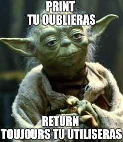

C2 Les fonction en Python ⚓︎
Notion de fonctions⚓︎
La notion de fonction est essentielle en programmation, elles servent à mieux structurer votre code.
Par exemple, elles permettent d’éviter de répéter plusieurs fois des portions de codes identiques. Ainsi, une fonction peut être vu comme un «petit» programme :
- à qui on donne des paramètres en entrée,
- puis qui effectue alors un traitement sur ces paramètres,
- qui renvoie enfin un résultat en sortie.
Une fonction qui modifie des variables mais sans renvoyer de résultat est appelée une procédure. Le langage Python ne fait pas de différence dans la syntaxe entre fonction et procédure.
A retenir :
En Python, une fonction se crée avec le mot-clé def.
Fonctions sans paramètre, sans valeur renvoyée⚓︎
def accueil():
print("Bonjour")
print("comment allez-vous ?")
accueil()
Bonjour
comment allez-vous ?
Fonction avec paramètre(s), sans valeur renvoyée⚓︎
def double(n):
d=2*n
print(f'le double de {n} est {d}')
double(4)
le double de 4 est 8
Vocabulaire :
- La valeur
nest appelée paramètre de la fonctiondouble. - On dit qu'on passe le paramètre
nà la fonctiondouble. - Dans l'exemple ci-dessus, on dit qu'on a appelé la fonction
doubleavec l'argument 4.
Remarques :
- là encore, notre fonction ne renvoie rien : on peut encore la considérer comme un ensemble d'instructions factorisé dans un même bloc. À la différence de la fonction sans paramètre, ces instructions ne sont pas toujours les mêmes, grâce à l'utilisation du paramètre demandé à l'utilisateur.
- la fonction bien connue
print()est une fonction à paramètre, qui affiche dans la console le contenu du paramètre.
Fonction avec paramètre(s) et avec valeur renvoyée⚓︎
On retrouve ici la notion classique de fonction rencontrée en mathématiques : un procédé qui prend un nombre et en renvoie un autre. En informatique, l'objet renvoyé ne sera pas forcément un nombre (cela pourra être aussi une liste, un tableau, une image...).
Le renvoi d'une valeur se fait grâce au mot-clé return.
Exemple
La fonction mathématique \(f : x \longmapsto 2x+3\) se codera par :
def f(x):
return 2*x+3
f(4)
11
Autour du return⚓︎
La force du return⚓︎
Différence fondamentale entre return et print
Le mot-clé return de l'exemple précédent fait que l'expression f(4) est égale à 11.
On peut d'ailleurs écrire en console :
>>> f(4) + 5
16
Imaginons (avant de l'oublier très vite) le code affreux ci-dessous :
def g(x):
print(2*x + 3)
On pourrait avoir l'illusion que la fonction g fait correctement son travail :
>>> g(4)
11
Mais g se contente d'afficher sa valeur calculée, et non pas de la renvoyer. En effet :
>>> g(4) + 5
16
Traceback (most recent call last):
File "<input>", line 1, in <module>
TypeError: unsupported operand type(s) for +: 'NoneType' and 'int'
En résumé :

def g(x):
print(2*x + 3)
g(4)+5
11
Traceback (most recent call last):
File "<input>", line 1, in <module>
TypeError: unsupported operand type(s) for +: 'NoneType' and 'int'
Le return est un siège éjectable⚓︎
Le mot-clé return provoque une éjection du code : tout ce qui est situé après le return ne sera pas exécuté.
Observez la différence entre les fonctions g et h .
def g(x):
print("ce texte sera bien affiché")
return 2*x+3
>>> g(4)
ce texte sera bien affiché
11
def h(x):
return 2*x+3
print("ceci ne sera jamais affiché")
>>> h(4)
11
def g(x):
print("ce texte sera bien affiché")
return 2*x+3
def h(x):
return 2*x+3
print("ceci ne sera jamais affiché")
print(g(4))
print(h(4))
ce texte sera bien affiché
11
11
Les fonctions sans return sont-elles des fonctions ?⚓︎
- Pour les puristes, une fonction sans valeur renvoyée sera plutôt appelée procédure. Le mot fonction est alors réservé aux fonctions qui ont effectivement un
return.
Variables locales, variables globales⚓︎
Notion d'espace de noms⚓︎
A retenir :
- Les variables définies dans le corps d'une fonction sont appelées variables locales
- Les variables définies dans le corps du programme (sous-entendu : pas à l'intérieur d'une fonction) sont appelées variables globales.
📚 Règles d'accès en lecture et en modification d'une variable suivant son espace d'origine⚓︎
Règles d'accès aux variables locales et globales :
- règle 1 : une variable locale (définie au cœur d'une fonction) est inaccessible hors de cette fonction.
- règle 2 : une variable globale (définie à l'extérieur d'une fonction) est accessible en lecture à l'intérieur d'une fonction.
- règle 3 : une variable globale (définie à l'extérieur d'une fonction) ne peut pas être modifiée à l'intérieur d'une fonction.
⚠ À propos de la règle n°3
(toute la vérité, rien que la vérité)
Pour certains types de variables (listes, dictionnaires...), la modification d'une variable globale à l'intérieur du corps d'une fonction est en fait possible (contrairement à ce qu'énonce la règle 3). Mais cela reste très fortement déconseillé.
Une fonction ne doit modifier que les variables qu'elle crée (ses variables locales) ou bien les variables qu'on lui a données en paramètre.
Une fonction qui ne respecte pas cette règle présente des effets de bord : on peut peut-être arriver à les gérer sur un «petit» code, mais cela devient illusoire sur un code utilisant de multiples fonctions.
Documenter une fonction⚓︎
Help !⚓︎
Si une fonction peut être assimilée à un outil, il est normal de se demander si cet outil possède un mode d'emploi.
Observons les fonctions pré-définies par Python, et notamment une des premières que nous avons rencontrées : la fonction print(). Son mode d'emploi est accessible grâce à la commande help(print).
>>> help(print)
Help on built-in function print in module builtins:
print(...)
print(value, ..., sep=' ', end='\n', file=sys.stdout, flush=False)
Prints the values to a stream, or to sys.stdout by default.
Optional keyword arguments:
file: a file-like object (stream); defaults to the current sys.stdout.
sep: string inserted between values, default a space.
end: string appended after the last value, default a newline.
flush: whether to forcibly flush the stream
Pensez à utiliser cette fonction help()
Créer le mode d'emploi de ses propres fonctions : les docstrings⚓︎
Il est possible, voire souhaitable (dès qu'on créé un code comportant plusieurs fonctions, et/ou qui sera amené à être lu par d'autres personnes), de créer un mode d'emploi pour ses fonctions. On appelle cela écrire la docstring de la fonction, et c'est très simple : il suffit de l'encadrer par des triples double-quotes """.
Exemple
def double(n):
"""
Renvoie le de n"
"""
d=2*n
return d
On peut donc maintenant demander de l'aide pour cette fonction :
>>> help(double
Help on function double in module __main__:
double(n)
Renvoie le double de n
def double(n):
"""
Renvoie le de n"
"""
d=2*n
return d
help(double)
Help on function double in module __main__:
double(n)
Renvoie le de n"
Exercices⚓︎
Exercice 13
Calcul aire
Écrire une fonction qui prends en entrée la longueur et la largeur d'un rectangle et qui renvoie son aire.
def caclule_aire(longueur, largeur):
...
Exercice 14
conversion_duree
Écrire une fonction qui convertit un nombre de secondes en heures/minutes/secondes.
def convertit(secondes):
...
return (heures, minutes, secondes)
On peut utiliser le fait que si a et b sont deux variables contenant des entiers, alors
a // b
a par b et
Exemple :
a=19
b=5
a // b
3
a % b
a par b.
a % b
4
Exercice 15
Prix
Le droit d'entrée journalier dans un parc d’attraction est
- 37€ pour un adulte
- 28€ pour un enfant.
Ecrire une fonction prix(nbre_adultes, nbre_enfants) renvoyant le prix à payer pour le parc d'attraction.